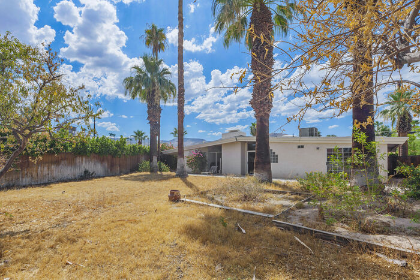

Palm Desert – San Luis Rey
Before/after comparison + construction progress documentation
Before & After
Drag the slider to compare. Replace images/after.jpg later with the finished photo.


Construction Progress
Photo log updated throughout the renovation.